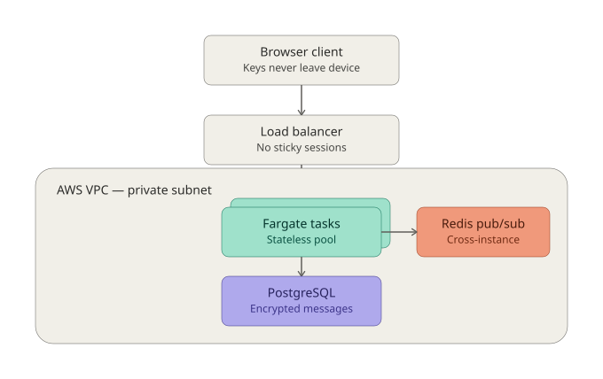
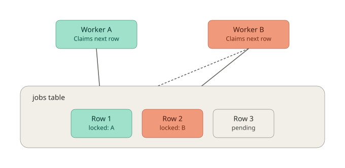

I build things that run — messaging platforms handling real traffic, job queues that don't lose jobs, infrastructure that provisions itself from one command.
Most of what's below started as a question I wanted answered myself: what does it take to run E2EE key exchange in a browser, or replay a write-ahead log correctly, or get a Kubernetes API validation change through review. The production numbers are real; the code is public.
Systems
9 projectsOnyxChat — production E2EE messaging platform
A real-time end-to-end encrypted chat system, designed and built from cryptography up through cloud deployment. Private keys never leave the client; the server never sees plaintext.
Cross-instance WebSocket fanout runs through Redis pub/sub, which is what lets stateless ECS Fargate tasks sit behind an ALB with no session affinity. Ships with a JavaFX desktop client alongside the React PWA.

Cloud Infrastructure — AWS + k3s + GitOps platform
One terraform apply stands up a full AWS VPC, boots a k3s cluster, installs ArgoCD, and syncs every workload — the cloud-native evolution of a physical homelab that started on a spare i5 and two Raspberry Pis.
Compute nodes live in a private subnet with no public IP; the ALB is the only door in, and SSM Session Manager is the only way to reach a node directly.
BatchQ — distributed job queue
A durable job queue that reserves work atomically via PostgreSQL's FOR UPDATE SKIP LOCKED — no distributed locks, no double-processing, no lost jobs, under load.

FlowQ — job queue on NATS JetStream
Same problem as BatchQ, different architecture — NATS JetStream as the transport, a typed gRPC/protobuf API on top, explicit ack/nak semantics, and graceful shutdown that lets in-flight jobs finish before a worker exits.
kv-store — persistent key-value store in Rust
A Redis-shaped exercise in getting durability right: every SET/DEL hits a write-ahead log with sync-before-apply flushing before it touches memory, and the WAL replays correctly on restart — including recovery from a corrupt trailing line.
PulseIngest — health signal ingestion API
A REST API for ingesting time-series health device data, with quality flagging applied at ingest time. Built specifically to get real .NET Core patterns under my hands — DI, async controllers, EF Core migrations.
HR System API — role-based REST API
Stateless JWT auth with role-based authorization enforced through Spring Security, a global exception handler for consistent error shapes, and paginated, searchable endpoints backed by Hibernate.
Homelab Infrastructure & Media Stack — physical k3s cluster
Three nodes — one x86 control plane, two Raspberry Pi ARM workers — running Flannel, Traefik, and Tailscale, with a 15-dashboard Grafana suite covering everything from CoreDNS to GPU utilization on a NVENC-accelerated Jellyfin transcode box.
Ray Tracer — path tracer from scratch
Ray-sphere intersection via the quadratic discriminant, diffuse shading with random hemisphere sampling, and 100-sample-per-pixel Monte Carlo anti-aliasing — no libraries, just vectors and a camera model.
Open source
2 contributionskubernetes/kubernetesPR #139206
Migrated PriorityClass.Value immutability enforcement from hand-written to declarative validation (KEP-5073, alpha) — 12 files across API machinery, scheduling, and generated code.
approved for testing
by a Kubernetes org member
elastic/elastic-agent-libs
Identified and fixed a security-relevant PKCS#1 PEM key deprecation, with a configurable warning-vs-hard-error mode for safe gradual rollout.
shipping in Elastic Agent,
Beats, and Fleet Server
Experience
IT Support Intern — Hennepin Technical College
Shadowed network switch configuration and troubleshooting across a distributed campus, and helped draft provisioning SOPs to make workstation imaging repeatable.
Client-Server Image Processing — University of Minnesota
Built a TCP client-server image processing system in C from scratch — raw sockets, manual protocol framing, binary transfer, no libraries. Handled the boring edge cases: partial reads, endianness, corrupt frames.
Autonomous Vehicle Transportation — University of Minnesota
Designed modular C++ simulation components with an Agile team, using interface-driven design to keep subsystems independently testable.